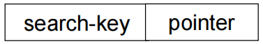
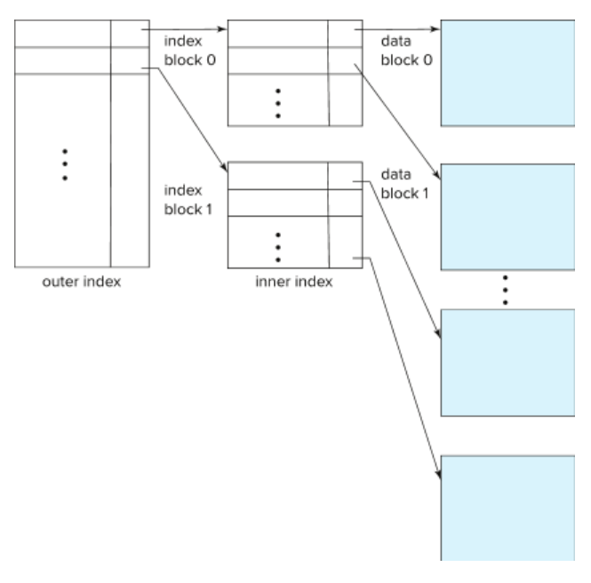
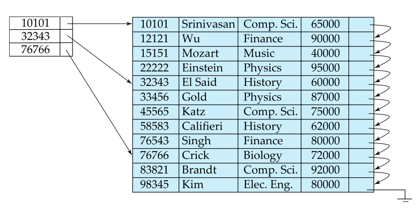
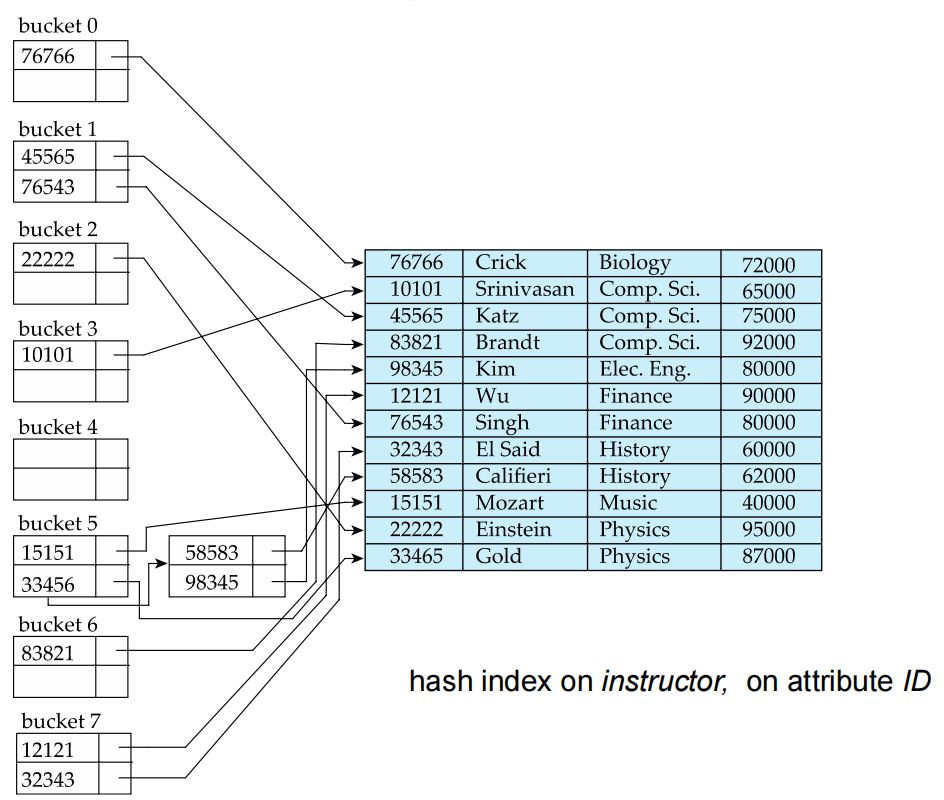
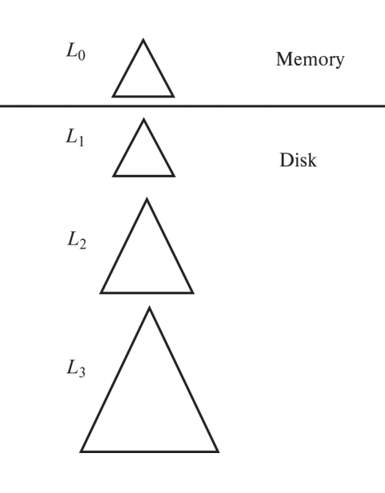

Lecture 10: Index
一、索引基础概念
1. 索引
- 作用：加速数据访问。类似图书馆目录系统，快速定位目标数据。
- 搜索键(Search Key)：用于查找记录的属性或属性组合。
- 索引文件结构：由(index entries)组成，格式为:

2. 索引类型对比
在有序索引（ordered index）中，索引条目按搜索键的值排序存储。（这个好说，所谓的“从小到大”依次排列就是这个意思）
在哈希索引中，使用哈希函数将键值映射到对应的“桶”（Bucket），每个桶保存指向数据记录的指针。
在聚集索引（Clustering index）中，数据文件本身是按索引键排序组织的（所以它其实也是有序索引）表中记录的物理存储顺序与索引顺序一致（这个很好理解，比如从上到下的查询结果往往都是1，2，3，...）。不过一张表只能有一个聚集索引，因为数据只能有一种物理顺序。
在非聚集索引（nonclustering index）中，索引的逻辑顺序与数据的物理顺序无关，索引叶子节点保存的是指向数据行的指针（通常是主键值）。这个不太好懂，举个例子：
非聚集索引示例
索引结构可能是这样的：
当你执行：
那么它就会先查索引得到 student_id = 102这样一条，再去主键索引找完整记录。
| 类型 | 特点 | 适用场景 |
|---|---|---|
| 有序索引 | 按键值排序存储 | 范围查询 |
| 哈希索引 | 均匀分布到桶中 | 精确查找 |
| 聚集索引(又称主索引) | 数据物理顺序与索引顺序一致 | 频繁范围扫描 |
| 非聚集索引(又称二级索引) | 数据物理顺序独立于索引顺序 | 辅助访问路径 |
3. 索引评估指标
- 支持的访问类型(点查询/范围查询)
- 访问时间
- 插入/删除时间
- 空间开销
- 维护成本
二、有序索引详解
1. 稠密索引（Dense Index）与稀疏索引（Sparse Index）
1.1 稠密索引
定义：每一个搜索键值在索引中都有一个对应的索引记录，指向数据文件中的具体位置。
优缺点：
- 每条记录都有一个索引项；
- 可以直接通过索引定位到具体的记录，支持精确查找和范围查询；
- 空间占用大；
- 更新代价高；
稠密索引
假设有如下数据表（按id排序）：
| id | name |
|---|---|
| 10 | Alice |
| 20 | Bob |
| 30 | Charlie |
| 40 | David |
稠密索引会为每个id都建立一个索引项：
1.2 稀疏索引
定义：每个数据块（block）或页（page）的第一个键值才有索引记录，而不是每条记录都有索引。
优缺点：
- 节省空间；
- 查询时需要先找到最近的索引项，然后顺序扫描直到目标记录；
- 更新代价低，更适合大数据量、批量访问的场景；
- 但是它不太适合处理大量重复键值（和上一条不矛盾，大量重复键值导致数据分布不清晰）；
- 查询较慢（需要顺序扫描）
稀疏索引
还是上面的数据，假设每两个记录存在一个磁盘块中：
- 块1：id=10, 20
- 块2：id=30, 40
稀疏索引只记录每个块的起始键值：
当要查找 id=35 时，先找到 30 的索引项，进入块2，再顺序查找。
1.3 对比
| 特性 | 稠密索引 | 稀疏索引 |
|---|---|---|
| 索引覆盖率 | 每个搜索键值都有索引记录 | 仅部分键值有索引记录 |
| 空间开销 | 高 | 低 |
| 查询性能 | 直接定位(快) | 需顺序扫描(慢) |
| 更新代价 | 高(每次数据变更都需更新索引) | 低(仅块边界变化时需要更新) |
2. 多级索引
- 定义：多级索引（Multi-level Index）是一种将索引结构组织成树状层级的技术。它把索引当作“数据”，再为索引建立上层索引，从而形成“索引的索引”。
- 设计原理：将大型索引视为文件，建立上层稀疏索引。
如果你的表有几百万甚至上亿条记录，那么它的索引也会非常庞大；
那么如果把这个索引当作一个“文件”来处理；
为这个索引文件建立一个新的“稀疏索引”——也就是第二级索引；
这样就可以快速定位到一级索引中的某个区域，而不必加载整个索引。
-
典型结构：

示例图如下：

-
优势：减少I/O次数，例如百万级数据只需3-4次磁盘访问
三、B+树索引
1. B+树
- 定义：B+树是一种自平衡的树结构，广泛用于数据库和文件系统中，用来组织大量的键值对数据，使得查找、顺序访问、插入和删除都具有良好的性能。
-
平衡树结构：所有叶节点在同一层，这保证了所有查询路径长度相同，不会出现“一边很深一边很浅”的情况（见下图示例）
graph TD A[根索引（第1级）] --> B1[中间索引块1（第2级）] A --> B2[中间索引块2] A --> B3[中间索引块3] B1 --> C1[数据块0] B1 --> C2[数据块1] B2 --> C3[数据块2] B2 --> C4[数据块3] B3 --> C5[数据块4] B3 --> C6[数据块5] -
节点容量：非根节点保持半满到全满
- 非叶节点：子节点个数为\(⌈\frac{n}{2}⌉\)到\(n\)
- 叶节点：其键值的个数为\(⌈\frac{n - 1}{2}⌉\)到\(n-1\)
-
实践参数：典型节点大小4KB，扇出(fan-out)约100。
一个磁盘块通常为 4KB；
每个节点可以容纳约 100 个子节点（扇出为 100）；
因此即使有上百万条记录，树的高度也只有 3~4 层；
意味着每次查询最多只需 3~4 次磁盘 I/O！
2. B+树操作算法
ADS的东西，就不多说了。
查询算法
def BplusTree_Find(root, search_key):
current = root
while not current.is_leaf:
# 找到第一个 ≥ search_key的键
idx = bisect_right(current.keys, search_key)
current = current.children[idx]
# 在叶节点中查找
if search_key in current.keys:
return current.pointers[current.keys.index(search_key)]
return None
插入算法（关键步骤）
- 查找目标叶节点
- 若节点未满直接插入
-
节点已满时分裂：
-
向上传播分裂直到满足B+树条件
3. B+树性能优势
- 高度计算：对于\(K\)个键值，每个节点最多有\(n\)个子节点，我们可以计算高度：\( \text{h} \leq \left\lceil \log_{\left\lceil n/2 \right\rceil}(K) \right\rceil \)（实例：\(n=100\)时，百万左右数据仅需4~5层）
- 对比平衡二叉树：相同数据量需要更多访问。
四、哈希索引
1. 静态哈希问题
静态哈希（Static Hashing）是最简单的哈希索引实现方式：
- 使用一个固定的哈希函数将键值映射到一组桶中；
- 每个桶保存指向数据记录的指针；
- 查询时通过
hash(key) % N确定去哪个桶查找.

然而这种做法有缺点：
- 桶溢出：数据增长导致性能退化。
- 空间浪费：预分配空间利用率低。
那么解决方案呢？我们使用动态哈希技术。
2. 动态哈希技术
2.1 基本对比
ADS！坏东西！
| 技术 | 核心机制 | 优点 | 缺点 |
|---|---|---|---|
| 可扩展哈希 (Extendible Hashing) |
使用目录表间接管理桶 插入导致桶分裂时只更新目录部分 目录按需翻倍 |
渐进式重组 支持快速扩展 适合内存数据库 |
目录可能膨胀很快 空间利用率较低 |
| 线性哈希 (Linear Hashing) |
不使用目录 每次只分裂当前桶 使用多个哈希函数逐步迁移数据 |
平滑扩展 无需额外目录 适合磁盘存储 |
插入/查询逻辑稍复杂 需要维护阶段和层级信息 |
| 布谷鸟哈希 (Cuckoo Hashing) |
使用两个哈希函数 冲突时踢出已有元素 最多两次查找 |
查找性能稳定 空间利用率高（可达90%以上） |
插入可能失败 实现较复杂 不适合大规模存储 |
| 周期性重哈希 (Periodic Rehashing) |
定期将所有键重新哈希并迁移到新桶中 或根据负载因子触发 |
负载均衡好 空间利用率高 适合分布式系统 |
需要暂停或渐进迁移 实现成本较高 |
2.2 可扩展哈希（Extendible Hashing）
核心思想：
- 使用一个“目录（Directory）”来间接指向桶；
- 每个桶有一个局部深度（Local Depth）；
- 当某个桶满了，就分裂它，并更新目录；
- 如果目录不够大，就翻倍扩容；
这个可以看看网上的资料，我看的是这篇【数据库】可拓展哈希（Extendable Hashing）。
2.3 线性哈希（Linear Hashing）
核心思想：
- 不使用目录；
- 每次只分裂当前桶；
- 使用多个哈希函数（h₀, h₁, ...）；
- 插入时如果桶满，则根据当前阶段选择是否分裂；
特点：
- 扩展是线性的，不会突然翻倍；
- 插入和查找都可能要用不同的哈希函数尝试；
这个也可以看看网上的资料，我看的是这篇 算法 Linear Hash 原理及实现。
五、高级索引技术
1. 位图索引（Bitmap Index）
定义：
一种为低基数字段（如性别、状态、是否启用等）设计的索引结构。每个不同的值对应一个位向量（Bit Vector），每一位表示某条记录是否具有这个值。
存储结构：
gender_bitmaps = {
'Male': BitVector('1010'), # 第1、3位为男（Bob 和 Dave）
'Female': BitVector('0101') # 第2、4位为女（Alice 和 Carol）
}
查询优化：
- 支持高效的布尔运算（AND / OR / NOT）进行多条件查询；
- 比如查找
gender='Male' AND status='Active'，只需要对两个位图做按位与操作；
示例说明：
假设我们有如下员工表（4人）：
| id | name | gender |
|---|---|---|
| 1 | Alice | Female |
| 2 | Bob | Male |
| 3 | Carol | Female |
| 4 | Dave | Male |
使用位图索引表示 gender 字段：
优点：
- 对低基数字段查询极快；
- 多条件组合查询效率高；
- 压缩后占用空间小；
缺点：
- 不适合高基数字段（如身份证号）；
- 更新频繁时性能差（因为要修改大量位）；
2. LSM树（Log Structured Merge Tree）
定义：
一种写入优化的存储结构，广泛用于 NoSQL 数据库（如 LevelDB、RocksDB、Cassandra、HBase）。
核心思想：
将随机写转换为顺序写，提升写入性能。
层次结构：
工作流程：
- 写入操作先写入内存（MemTable）；
- MemTable 达到大小限制后，写入磁盘形成 SSTable（Sorted String Table）文件，放在 L0 层；
- 定期执行 Compaction（合并压缩），将上层的数据合并到下一层；
- 越往下层级的数据越有序、越紧凑；
示例流程：
- 插入数据 → 写入 MemTable；
- MemTable 满 → 写入 L0；
- L0 文件过多 → 合并到 L1；
- L1 文件过多 → 合并到 L2；
- …依此类推；

优点：
- 极高的写入吞吐量；
- 支持大规模数据写入；
- 高效压缩机制节省空间；
缺点：
- 读取可能需要查找多个层级的文件；
- Compaction 过程可能影响写入性能（称为“写放大”）；
3. 覆盖索引（Covering Index）
定义：
一种特殊的复合索引，包含查询所需的所有字段，从而避免回表查询。
回表查询是什么？
- 当你使用普通索引查询时，数据库会先通过索引找到主键；
- 然后再去主键索引中查找完整记录；
- 这个过程叫“回表”，耗时；
创建方式（以 SQL 为例）：
查询示例：
如果使用上面的覆盖索引，数据库可以直接从索引中拿到所有需要的字段，无需回表！
优点：
- 显著减少 I/O 次数；
- 提升查询速度；
- 减少锁竞争（不访问主表）；
缺点：
- 占用额外存储空间；
- 插入/更新成本更高（因为要维护索引）；
4. 缓冲树（Buffer Tree）
定义：
缓冲树（Buffer Tree）是一种为高效处理大量写操作而设计的外部内存索引结构。它是对传统B+树的改进版本，通过引入缓冲区机制，将多个写操作合并成一次I/O操作，从而显著降低磁盘访问次数。
核心思想：
- 每个节点维护一个缓冲区（buffer）；
- 写操作先缓存在节点的缓冲区中；
- 当缓冲区满或满足一定条件时，才将数据批量“下推”到子节点；
- 叶节点最终负责将数据写入磁盘；
结构组成：
根节点（Root Node）
│
├── 内部节点1（Internal Node）
│ └── 缓冲区 + 子节点指针
│
├── 内部节点2
│ └── 缓冲区 + 子节点指针
│
└── 叶节点（Leaf Nodes）
└── 缓冲区 + 实际数据记录（或指向磁盘页的指针）
工作流程：
-
插入操作：
- 数据首先被插入到根节点的缓冲区；
- 当缓冲区满了，数据会被“flush”到下一层节点；
- 这个过程会逐层向下传递，直到到达叶节点；
- 叶节点也会有缓冲区，当其满时，数据才会最终写入磁盘；
-
查询操作：
- 类似于B+树，从根节点开始查找，沿着正确的分支向下搜索，直到找到目标数据；
- 缓冲区中的数据也需要参与查询，因为它们可能包含最新的更新；
-
Flush操作：
- 定期或在特定条件下（如缓冲区满），触发 flush 操作，将缓冲区中的数据写入磁盘；
- Flush 操作可以是异步的，以减少对主操作的影响；
示例说明：
假设你正在向系统中批量插入日志数据：
这些日志不会立即写入磁盘，而是先缓存在树的不同节点中。当某个节点的缓冲区满后，会一次性将这 1000 条日志写入磁盘，从而大大减少了 I/O 次数。
优点：
| 特点 | 描述 |
|---|---|
| 高性能写入 | 批量写入减少I/O操作 |
| 低延迟查询 | 缓冲区允许快速查找最新插入的数据 |
| 可扩展性强 | 支持大规模数据写入 |
| 适应性强 | 能根据负载动态调整flush策略 |
缺点：
- 实现复杂度高：相比B+树更难实现；
- 内存占用大：每个节点都需要缓冲区；
- 数据一致性风险：缓冲区未刷盘时断电可能导致数据丢失（可通过 WAL 解决）；
BufferTree例题
这道题的设计改编自某历年卷。
BufferTree是在标准B+树基础上改进的一种数据结构，其核心思想是在每个内部节点添加一个缓冲区。当缓冲区满时，新插入的数据不会立即写入磁盘，而是先在缓冲区中进行批量处理，从而减少磁盘I/O次数。具体规则如下：
- 每个内部节点都包含一个缓冲区
- 当插入新值时，首先将其放入根节点的缓冲区
- 如果缓冲区已满，则将缓冲区中的所有值按B+树规则下推到对应的子节点
- 如果子节点是内部节点，则将值放入其缓冲区；如果子节点是叶子节点，则将缓冲区中的最小值插入该叶子节点
- 所有叶子节点形成一个双向链表结构
本题中，B+树的阶数n=4（即每个节点最多存储3个键），每个缓冲区最多可以存储2个元素。现在给出三个问题，请解答。
问题一：范围查询需要访问多少个节点？
假设当前BufferTree已包含键值{5,15,25,35,45}，且所有内部节点的缓冲区均为空。现在需要执行一个范围查询操作，查找所有大于10且小于30的键值。请问这个范围查询操作需要访问多少个节点？
问题二：插入三个值后的BufferTree结构
如果初始BufferTree为空，现在依次插入三个值：10、20、30。请画出插入操作完成后的BufferTree结构图，并标注所有节点中的键值和缓冲区内容。
问题三：每次插入操作修改的块数量
同样基于问题二的插入过程，假设根节点始终在内存中不计入修改块数量，其他节点均在磁盘中，每次访问磁盘（无论是读取还是写入）都计为一次块修改。请计算在插入10、20、30这三个值时，每次插入操作后会修改多少个磁盘块。
问题解答：
问题一：范围查询需要访问多少个节点？
解答过程：
-
首先构建n=4的标准B+树（每个内部节点最多3个键，4个指针）：
- 叶子节点：[5,15,25] → [35,45]
- 根节点：指向这两个叶子节点的指针，键值为25（第一个叶子节点的最大值）
-
执行范围查询(10,30)：
- 访问根节点（1次）
- 访问包含15和25的第一个叶子节点（1次）
- 由于25 < 30，继续访问下一个叶子节点（发现35 > 30，停止）
-
总访问节点数：
- 内部节点：1（根节点）
- 叶子节点：2（[5,15,25]和[35,45]）
- 总计：3个节点
最终答案：需要访问3个节点
问题二：插入三个值后的BufferTree结构
解答过程：
- 初始状态：空树
-
插入10：
- 根节点（此时是叶子节点）缓冲区：[10]
-
结构：
-
插入20：
- 根节点缓冲区：[10,20]（达到容量2）
-
需要下推，但因为是叶子节点，直接创建键值：
-
插入30：
- 放入根节点缓冲区：[30]
-
结构：
最终结构图：
问题三：每次插入操作修改的块数量
解答过程：
-
插入10：
- 仅修改根节点（在内存中，不计入）
- 磁盘修改：0块
-
插入20：
- 根节点缓冲区满，需要下推
- 操作： a. 创建新叶子节点（1次写） b. 将[10,20]写入叶子节点（1次写） c. 清空根节点缓冲区（内存操作）
- 磁盘修改：1块（新叶子节点）
-
插入30：
- 仅加入根节点缓冲区
- 缓冲区未满（容量为2，当前有1个）
- 磁盘修改：0块
最终答案：
- 插入10：0块修改
- 插入20：1块修改
- 插入30：0块修改